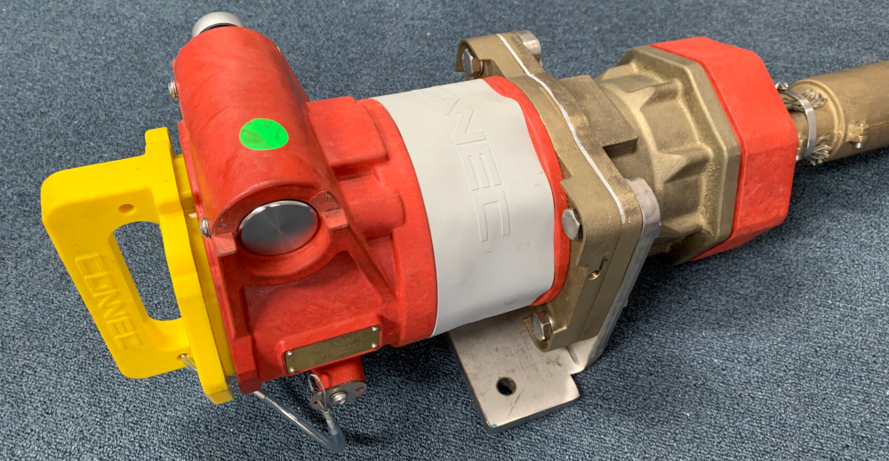

Throughout the time spent at Connec, I have had adapt to many roles and responsibilities due to the nature of the Work and the size of the team. Such Roles include; CAD/Drawing Manager, Managing Tool Designs and modifications, Managing local prototyping and manufacturing, Generating QA procedures, Generating Marketing Content, Website Management, 3D printer maintenance and Staff Training.
Designing High Voltage Connection Systems at Connec has allowed me to work and design in many mediums such as Silicone/Rubber Mouldings, Injection Moulded Components, Cast Metal Components, High Precision Machined Parts and Folded sheet Metal Designs. The bonus to all of this has been the engagement of local Australian manufacturers.
The Receptacle assembly above highlights the understanding of the varying materials and manufacturing processes that working in-house for Connec has required. Solving problems for Connec has involved utilising my knowledge and experience in many varying manufacturing processes to be able to make the most suitable and beneficial design decisions.